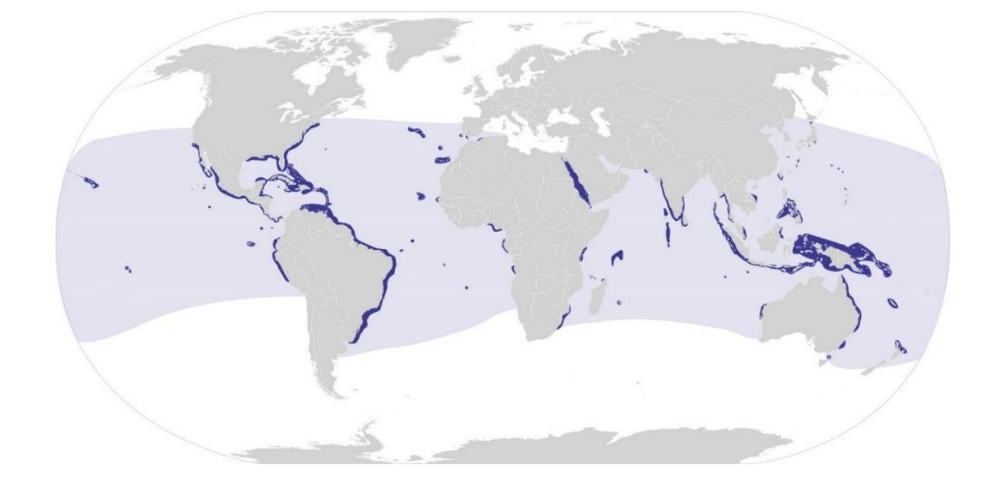
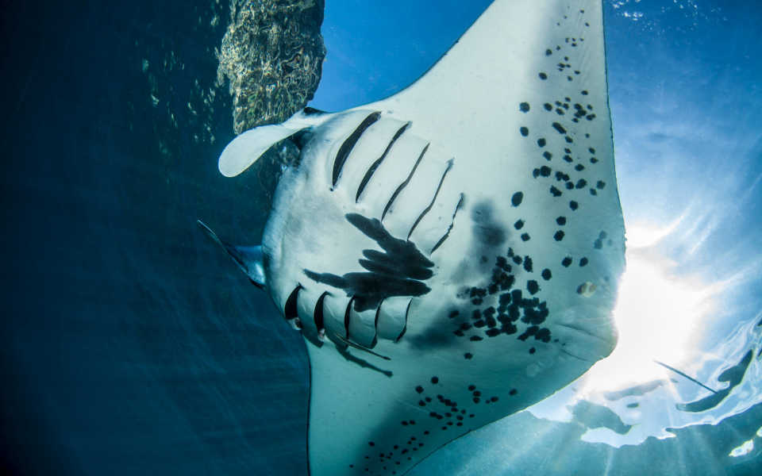
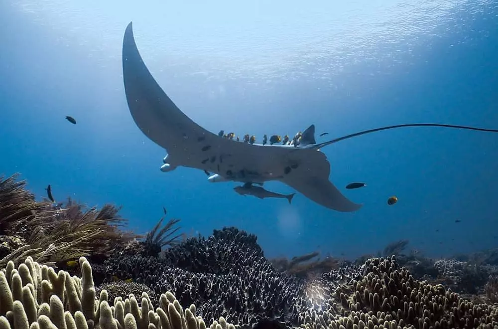
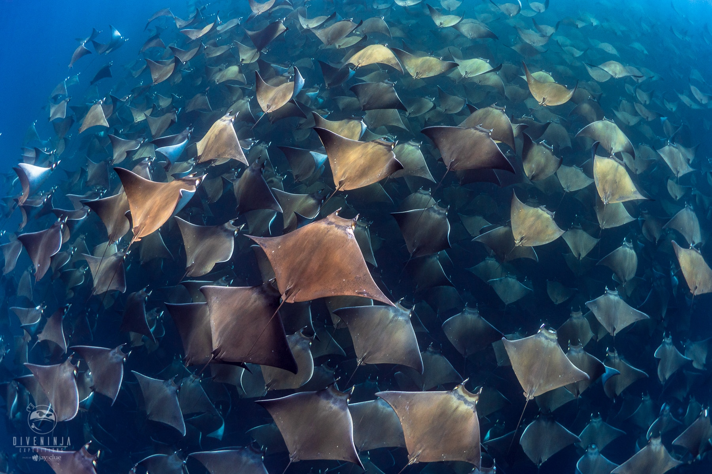

Biología y Conservación
Las mantarrayas son peces cartilaginosos (elasmobranquios) pelágicos que se alimentan por filtración, alcanzando hasta 60 años de vida. Su conservación es crítica debido a su baja tasa reproductiva —una cría cada 2 o 3 años— y a diversas amenazas ambientales.
Entre estas amenazas destacan la sobrepesca, la captura incidental y la degradación del hábitat. Por ello, están protegidas por convenios internacionales como CITES (Apéndice II) para frenar su comercio insostenible y proteger la biodiversidad marina.
| Categoría | Descripción |
|---|---|
| Hábitat | Océanos tropicales y subtropicales, frecuentando arrecifes y estaciones de limpieza. |
| Alimentación | Animales filtradores que consumen grandes cantidades de zooplancton y peces pequeños. |
| Reproducción | Ovovivíparas. Tienen una sola cría cada 2 o 3 años, lo que las hace vulnerables. |
| Estado | Vulnerable según la lista roja de la UICN debido a la pesca excesiva. |
Ubicaciones del mundo con mayor presencia

Detalle branquias

Estación de limpieza para mantarrayas

Grupo de mantarrayas
